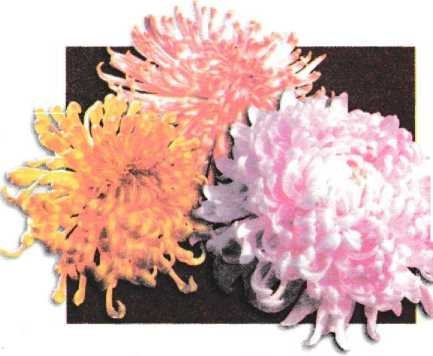
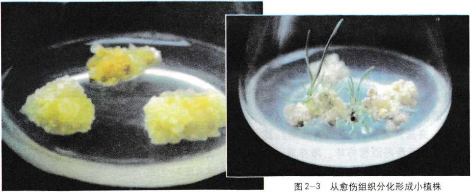
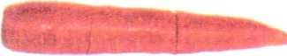
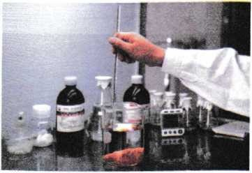
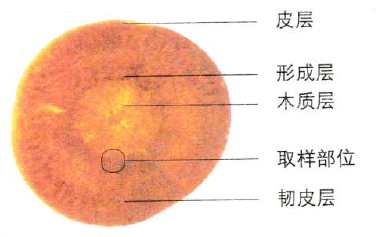
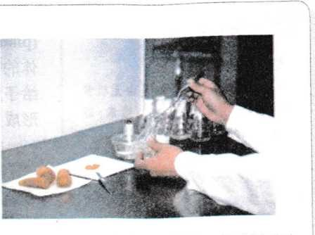
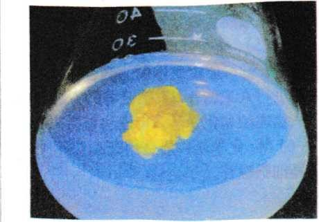

2.1植物细胞工程的基本技术
无论是绚丽多姿的花草，还是碧绿参天的大树，大多都是通过种子播种或枝条扦插实现繁殖的。其实在一定的条件下，利用它们的一片叶子、一瓣花瓣，甚至一粒花粉，同样可以得到大量的幼小植株。图2—1就是科学家利用菊花的花瓣培养出的菊花。那么，植物的花瓣是怎样长成一株完整植株的呢？
植物的花瓣属于高度分化的组织，利用它来培育出新的植株，首先要通过细胞的脱分化过程，培养出愈伤组织，然后再从愈伤组织分化形成小植株。这里所说的细胞脱分化（dedifferentiation)就是让已经分化的细胞，经过诱导后，失去其特有的结构和功能而转变成未分化细胞的过程。在植物中，一些分化的细胞，经过激素的诱导，可以脱分化为具有分生能力的薄壁细胞，进而形成植物的愈伤组织（图2 - 2)。愈伤组织在一定的培养条件下，又可以再分化出幼根和芽，形成完整的小植株（图 2-3)。
为什么植物的一瓣花瓣就可以培育出完整的植株呢？ 我们知道，具有某种生物全部遗传信息的任何一个细胞， 都具有发育成完整生物体的潜能，也就是说，每个生物细胞都具有全能性的特点。因此，在理论上，生物的任何一个细胞都具有发育成完整植株的潜力。但是，在生物的生长发育过程中，细胞并不会表现出全能性，而是分化成各种组织和器官。这是因为在特定的时间和空间条件下，细胞中的基因会有选择性地表达出各种蛋白质，从而构成生物体的不同组织和器官。
植物组织培养技术
要把某种植物的一块组织通过培养得到一株完整植株， 应该如何操作呢？这就涉及植物细胞工程中最基本的技术之一—植物组织培养。下面我们就通过“胡萝卜的组织培养”实验来了解这一技术。

实验 胡萝卜的组织培养
实验原理
植物体的根、茎、叶细胞一般都具有全能性，在一定的营养和激素等条件下， 可以脱分化形成愈伤组织。将愈伤组织转接到含有不同激素成分的培养基上，就可以诱导其再分化生成胚状体或丛芽，进而发育成完整的小植株。植物组织培养的全过程，证明了分化的植物细胞，仍具有形成完整植株所需要的全部基因。
实验目的
1.尝试进行植物的组织培养。
2.了解植物组织培养的基本原理。
材料用具
胡萝卜根（或烟草叶片、小麦花药、菊花花瓣等）、经过灭菌的培养基、体积分数为70%的酒精、体积分数为20%的次氯酸钠溶液、无菌水、50 mL锥形瓶或大试管、烧杯、酒精灯、恒温箱、超净工作台（ 或接种箱）、高压灭菌锅（或普通高压锅）、 滤纸、标签、消毒用酒精棉球、培养皿（或瓷砖）、解剖刀、镊子等。
方法步骤

1.将胡萝卜根用自来水充分洗净，削去外皮，并切成段（约10cm)。用酒精棉球擦手消毒。

2.在超净工作台（或接种箱）上将胡萝卜段用酒精溶液消毒30 s后，立即用无菌水清洗2 — 3次， 再用次氯酸钠溶液处理30 min后，立即用无菌水清洗2~3次。

3.用无菌的滤纸吸去胡萝卜段表面的水分。然后，在消毒瓷砖上，用无菌的解剖刀将胡萝卜段切成1 cm厚的横切片，再选取有形成层的部位，切取1 cm3左右的小块。

4.将胡萝卜组织块接种到培养基上，用锡箔纸封盖瓶口，并用橡皮筋扎紧。然后，在培养瓶上贴上标签，写明材料名称、接种日期和小组编号。

5.将接种后的胡萝卜组织块，放在23~26℃恒温避光条件下培养。4d后，检查培养材料的污染情况；14d后，观察愈伤组织的生长状况。然后，在恒温箱中继续避光培养。在培养过程中，注意定期观察和记录愈伤组织的生长情况。
6.培养一段时间后，将生长良好的愈伤组织转接到分化培养基上，培养一段时间后，胡萝卜的愈伤组织就可以诱导出试管苗。然后将试管苗移栽到大田，培养成正常植株。